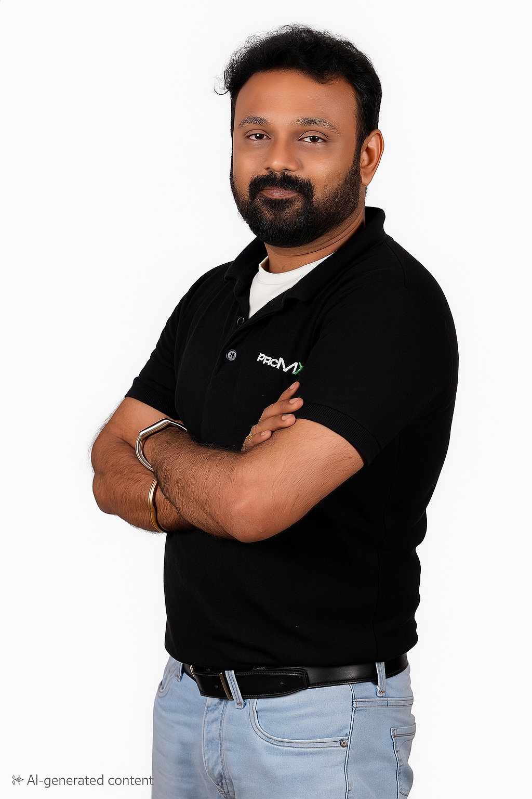

ABOUT
Technology leadership with a delivery-first mindset.
I work where business transformation, enterprise applications and program execution meet.

About me
I’m OV Prakash, a Delivery & Practice Leader focused on Microsoft Dynamics 365, Power Platform, ERP transformation and AI-enabled delivery.
Across enterprise programs, I bring together business stakeholders, delivery teams, architects and leadership to create a common operating rhythm—from scope and governance through build, migration, testing, cutover, go-live and hypercare.
My experience spans implementation leadership, PMO governance, stakeholder management, resource planning, presales and commercial support, multi-business-unit rollouts, data migration, quality governance and delivery stabilization.
I am especially interested in using AI and automation to remove repetitive project-management work, improve decision visibility and help delivery teams spend more time on judgment, risk management and stakeholder outcomes.
I also write and share practical perspectives on Dynamics 365, Power Platform, ERP governance, AI-driven project management, implementation quality and delivery leadership.
Professional focus
HOW I WORK
A few principles I bring to every transformation.
Make status decision-ready
Leadership reporting should surface decisions, risks, dependencies and ownership—not just activity.
Design for adoption
A technically correct solution is not enough; process fit, readiness and ownership determine real success.
Govern without slowing delivery
Good controls create clarity and traceability while keeping teams moving.